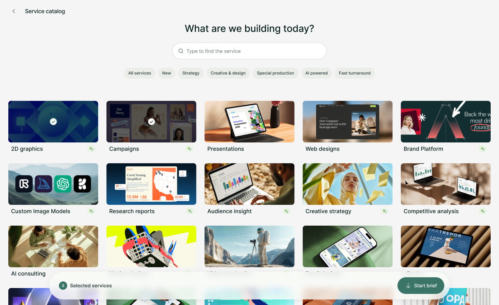
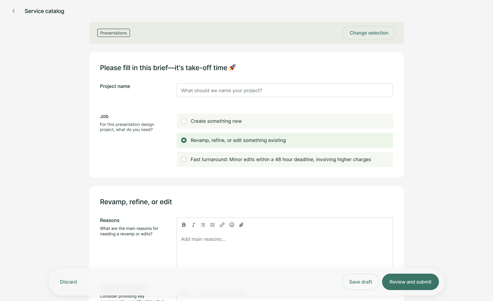
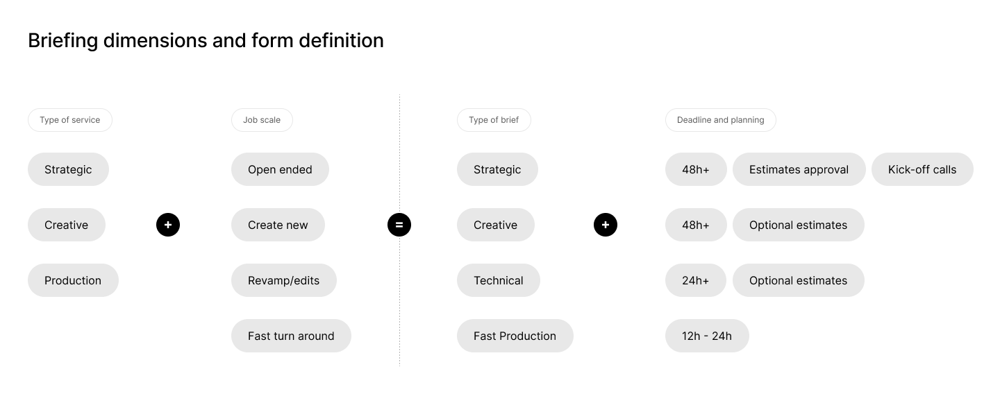
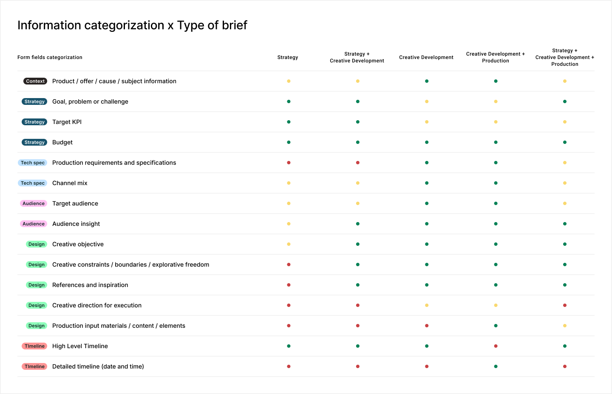

TL;DR
- Superside's forms were simple to fill out, but that simplicity led to long planning phases and back-and-forth that hurt time-to-start and customer satisfaction.
- The fix was a service catalog: since services were already categorized for pricing, that same structure could shape brief forms too.
- I pushed for treating the catalog like a storefront and prioritized filtering and search early, since a growing service list made both essential.
- I also mapped every piece of brief information against each type of request, so each form field's priority could be set with intention instead of by feel.
- Result: 15% faster to start projects, a 25% increase in brief quality score, and 30% more cross-service briefs.
Context
Superside is a subscription-based agency where customers have access to a wide range of design and marketing services. Communication, project management, and handovers all happen through a single platform, with Project Managers and Creatives running the operation behind the scenes.
To request a project, customers must submit a brief. It's the central piece of demand generation, and the very first, most important step toward a project's success.
Problem
Superside's operational premise was to do all the hustle and heavy lifting on behalf of its customers. That covered everything from project creation (triggered when a request came in) to project execution, when Project Managers and Creatives did the hard work.
But keeping project requests as simple and frictionless as possible would create some consequences down the line: less detailed requests led to long planning phases, a lot of back and forth communication, impacting the time-to-start metric, as well as the overall customer satisfaction during project execution. There was clearly an opportunity to find a sweet spot between doing the hard work for the customers and still getting better context from them.
Rather than a mere request form to start a conversation, briefs needed to work as information-rich documents that guide the team throughout the entire project duration, ensuring everyone works toward a shared vision, which meant arriving with enough detail to cut back-and-forth in planning, let execution start earlier, and reduce review rounds.
Goals
Through research and business analysis, we understood that what was lacking was better guidance on what was important for each service:
- Briefs should be service-specific: you don't brief digital ads the same way you brief video production.
- Decrease time-to-start on projects. Richer briefs should enable Project Managers to be more proactive and plan autonomously.
- Remove blank canvas anxiety: introduce a guided experience and establish a minimal brief quality standard so briefs are not only rich, but also consistent across brands, making it easier for Project Managers to act on them.


Solution
In order to price and charge customers, services already had a systemic categorization that we could leverage. It was a matter of analyzing and defining what type of information each service demanded, and crossing that with the scale that each service may have (from small edits to creating something completely new).
The new brief system introduced a few improvements that made direct impact not only in how projects are requested, but in demand generation and related metrics:
- The catalog enabled multi-service briefing, by allowing users to select more than one deliverable in the same request.
- The brief catalog served as a real shopfront, creating awareness of services customers didn't know Superside offered.
- With richer briefs, planning, scoping, and estimating costs for projects became easier as Project Managers gained access to more information upfront.
Where the design work lived
Designing the Service Catalog required close collaboration not only within the product squad, but outside of it as well. The team worked closely with operation management to analyze each service and define what information was required, nice to have, and optional for each kind of work, balancing richer briefs against a frictionless experience.
Betting on an agency-like presentation. I pushed for treating the catalog like a storefront rather than a utilitarian list. It was the first time Superside presented its services visually, and I made the case for custom imagery over generic icons; Marketing Creatives then executed those images once that direction was set.
Information architecture as the real challenge. With a growing service list, filtering and search weren't optional extras. I made the call to prioritize them from the start rather than treat them as a later add-on.
The shopping basket, born from exploration. The multi-service brief and the "shopping basket" concept, letting customers bundle several deliverables into one request, came out of visual explorations I was running early on.
Turning form fields into a deliberate system. I mapped every piece of brief information against each type of request, strategic, creative, technical, and their combinations, so each field's priority (required, optional, or hidden) was set with intention. That categorization let us play with form fields until we reached the right balance between rich briefs and a frictionless experience.

